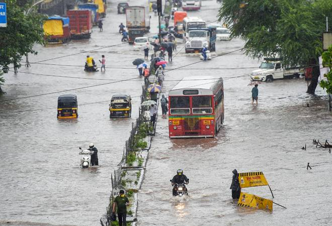

HEDINGS
Cyclone Biparjoy: Flights at Jamnagar airport suspended till Friday,NOTAM issued
Self-motivated, visually-impaired Pune student eyes big as she is set to join IIM Indore
In special forecast for Pandharpur Wari, IMD predicts hot, humid weather
Mumbai Live News Updates: ‘Fear of Thackeray, Shiv Sena is visible’ Sanjay Raut
reacts to Amit Shah’s Nanded speech
Man electrocuted during Maharashtra CM’s event in Diva, dies

IMD issues red alert for Pune, Nashik, other cities

Cyclone Biparjoy: Flights at Jamnagar airport suspended till Friday,NOTAM issued
According to the Jamnagar airport director, the airport has issued a NOTAM for three days - Wednesday-Friday. Diesel and petrol required to operate the airport in an emergency have also been stored. Cyclone Biparjoy: Flights At Gujarat's Jamnagar Airport Suspended Till Tomorrow Also, there are no aircraft in the parking area at the airport. Jamnagar: Commercial flight operations at Gujarat's Jamnagar airport will remain suspended till Friday as part of precautionary measures ahead of cyclone Biparjoy's landfall. According to the Jamnagar airport director, the airport has issued a NOTAM for three days -- Wednesday-Friday. Diesel and petrol required to operate the airport in an emergency have also been stored. According to NOTAM, Air India and Star Air have cancelled their scheduled flights. NOTAM means 'Notice to Airmen' - it is issued at the airport for flights coming from outside.
Self-motivated, visually-impaired Pune student eyes big as she is set to join IIM Indore
She may not see the colourful birds but enjoys their chirping every morning. No matter whether roses are red or yellow, 20-year-old Sakshi Amrutkar simply loves their smell. For this Pune woman, born blind, it is now her time to reassure and support her parents as she moves on to pursue higher studies at the Indian Institute of Management, Indore – the first student from the National Federation of Blind Maharashtra (NFBM) Jagriti School for Blind Girls, Alandi, to do so.On June 25, Sakshi will join the institution and on top of her bucket list is to purchase the first-ever flight tickets for her parents. “They were horrified to find that I could not see and despite multiple rounds of medical checkups I was diagnosed with a condition called retinitis pigmentosa – a group of rare eye and genetic disease that affect the retina,” says Sakshi and adds that with no cure she motivated herself to excel academically.“My mother used to scan pages of the textbook and would convert it into a pdf or Word document so that I could use the TalkBack screen reader to study. I got a laptop later during college days and that made studying a lot easier,” she adds.Assistive Technology has helped specially challenged children not just with studies but other obstacles like making payments and today Sakshi is comfortable going to the shop or mall and making her own purchases and payment.Her father’s fabrication unit shut down during Covid pandemic and mother who is a librarian manages a fair amount of household expenses. Her parents’ struggle motivated her to perform well.She cleared the CA Foundation course in the first attempt at the age of 16 but decided to pursue higher studies in strategic management. She appeared for the Common Admission Test (CAT) last year and after interviews she got calls from 11 Indian Institutes of Management (IIMs). Finally, she decided to study at IIM-Indore. Sakina Bedi, project director of NBFM Jagriti School and NBFM national spokesperson, says Sakshi is the first such student from among the 350 alumni to have got into a top B-school.
In special forecast for Pandharpur Wari, IMD predicts hot, humid weather
The Pandharpur Wari, the annual pilgrimage procession from several parts of Maharashtra to honour Lord Vitthal, will test the resolve of lakhs of devotees this year as the India Meteorological Department (IMD) has predicted hot and humid temperatures for the first seven days.“During the early phase of the Palkhi pilgrimage, the weather will be suffocating and uncomfortable, especially between 10.30 am to 4 pm. Organisers should take full precaution to avoid dehydration,” Dr Anupam Kashyapi, head of weather forecasting at the IMD, said. Thunder and lightning with spells of rain are likely in the afternoons in the first phase. The pilgrimage from June 10 to June 29 will see lakhs of devotees walking from the temple towns of Dehu and Alandi to Pandharpur.The IMD has been issuing annual pilgrimage forecasts for the last few years. “Staring Friday, we will be issuing forecasts till the end of the event to update pilgrims about the weather a couple of days in advance,” Kashyapi added.A majority of the devotees are from the farming community and finish their sowing before participating in the pilgrimage. This year, however, Maharashtra is yet to see any significant rainfall and sowing is yet to start.
Mumbai Live News Updates: ‘Fear of Thackeray, Shiv Sena is visible’ Sanjay Raut reacts to Amit Shah’s Nanded speech
Reacting to Union Minister Amit Shah’s speech in Maharashtra’s Nanded, Uddhav Thackeray Faction leader Sanjay Raut said, “In Shah’s 20-minute speech in Nanded, 7 minutes he spoke only about Thackeray, which means that Matoshree’s dominance is still intact. Shiv Sena party was broken, and names and symbols were given to traitors. Even after this, fear of Thackeray and Shiv Sena is visible, this fear is good,” quoted ANI. Amit Shah, while addressing a rally in Maharashtra’s Nanded yesterday, had also pitched for the return of the Prime Minister Narendra Modi-led government in 2024. “It was your support and faith in PM Modi’s leadership that helped the BJP get an absolute majority and complete nine years successfully. In 2024, do you want Rahul Gandhi or Narendra Modi? The people of Nanded will give the answer,” Shah said. Meanwhile, elevation of Nationalist Congress Party (NCP) leader and Baramati MP Supriya Sule as party’s national working president once again cast a shadow on party leader Ajit Pawar, two months after reports were making rounds about Ajit Pawar joining hands with the BJP despite he denying any such move. On Saturday, NCP leaders were quick to ward off any such speculations. Pawar ridiculed the reports about Ajit Pawar’s unhappiness saying it does not have even 1% of truth. On Saturday, Sharad Pawar announced that Praful Patel and Supriya Sule will be the working presidents of the NCP.
Man electrocuted during Maharashtra CM’s event in Diva, dies
A 55-year-old man Wednesday died of electrocution during an event which was attended by Maharashtra Chief Minister Eknath Shinde in Thane’s Diva area, the police said.he deceased has been identified as Ramjiavan Vishwakarma, a resident of Mumbradevi Colony in the Shloknagar area of Diva township, officials said.According to the police, the incident took place around 8.30 pm during the CM’s function when Vishwakarma came in contact with an electric pole. He was immediately rushed to a nearby hospital where he died during treatment.CM Shinde was in Diva to inaugurate several development works.The victim accidentally came in contact with the police due to which he suffered an electric shock,” said an officer.The Shil Daighar police have registered a case of accidental death.After the incident, Kalyan MP Srikant Shinde, the son of CM Shinde, visited the hospital and inquired about Ramjiavan’s health.
IMD issues red alert for Pune, Nashik, other cities
Amidst the onset of torrential monsoons in the state, a red alert has been issued for Kolhapur, Palghar, Nashik, Pune, and Ratnagiri districts for heavy rains till July 14. An orange alert has been issued for Mumbai for the next three days. A high tide hit Marine Drive in Mumbai on Tuesday amidst heavy rainfall. Earlier today, IMD predicted moderate to intense spells of rain to occur at isolated places in the districts of Mumbai, Palghar, Thane, Raigad, Ghat areas of Pune and Satara, Nanded, Hingoli, Parbhani, and Latur. In Mumbai, the IMD has predicted moderate to heavy rainfall for the next 24 hours in the city and its suburbs, with the possibility of heavy rainfall in isolated places.
World News

Green Diamond, Sandalwood Box: What all PM Modi gifted to First Lady, US President Joe Biden
PM Modi US Visit: Prime Minister Narendra Modi during his visit to the US gifted special items to US President Joe Biden and First Lady Jill Biden.

In PICS: Pakistan’s ex-PM Imran Khan arrest sparks massive violence across cash-strapped nationn
Pakistan’s former Prime Minister Imran Khan was arrested and dragged from court Tuesday as he appeared to face charges in multiple graft cases, a dramatic escalation of political tensions that sparked violent demonstrations by his angry supporters across the country.

IN PICS | Sudan continues to burn amid clashes
The Sudanese military and a powerful paramilitary group battled for control of the chaos-stricken nation for a second day Sunday, signaling they were unwilling to end hostilities despite mounting diplomatic pressure to cease fire. At least 61 civilians are dead while more than 670 injured so far.

IN PICS | Sri Lanka continues to boil amid economic crisis
Defying a nationwide curfew in Sri Lanka, several hundred protesters continued to chant slogans against the government. This comes a day after violent clashes left four people dead and prompted the resignation of the prime minister, Mahinda Rajapaksa. The island nation is facing it's worst economic crisis in decades.

IN PICS | As Russia-Ukraine war reaches 75th day, Moscow lights up in 'Victory Day' celebrations
People marched on the streets carrying posters and photographs of those who lost their lives in the most recent Russia Ukraine war along with those who had lost their lives in World War II.

IN PICS | PM Modi at COP26; several global leaders in attendance at the Climate Summit in Glasgow
Prime Minister Narendra Modi on Monday arrived at the Scottish Exhibition Centre to attend the opening ceremony of the COP26 climate summit where he would deliver a national statement alongside other world leaders.